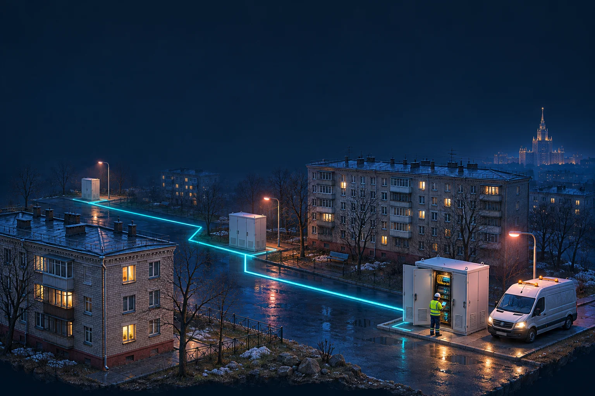
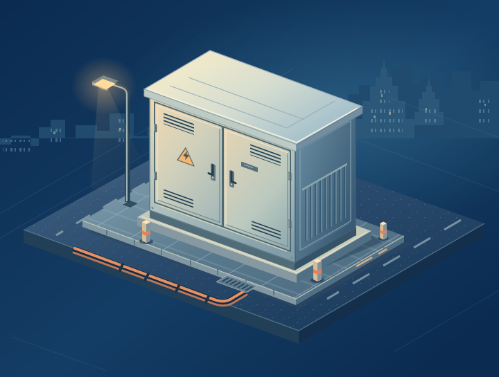

FirstEnergy
Камеры на служебных машинах выявляют признаки повреждений во время поездки. Для Москвы берём первичный отбор шкафов по ходу обычного маршрута.
Описание проекта ↗
МОСКВА / СЕТЕВАЯ ИНФРАСТРУКТУРА
Снимок РЩ или ТКШ превращается в карточку мастера.
Проверьте дефект, назначьте работы и примите результат.
РАБОЧЕЕ МЕСТО МАСТЕРА
В учебной карточке уже есть кадр с маршрута. Отметьте замечания и проверьте, какие работы можно закрыть.
Проверьте дверь и покрытие.
Архивная запись серверного запроса по другому шкафу. Оценки относятся к его исходному снимку. Решение по учебному ТКШ-014 остаётся за мастером.
Исходный ответ в JSON ↗ПРОВЕРКА МОДЕЛИ
Для каждого шкафа отдельно оцениваются механические повреждения и дефекты лакокрасочного покрытия. При сомнении нужен ещё один ракурс.
Изучить 62 записи| Режим | Macro-F1 |
|---|
Похожие кадры объединяли в группы и целиком оставляли в одном из пяти внешних фолдов. Для типа шкафа использовали его выделенную область, для дефектов — признаки изображения. При загрузке фото доступен полный анализ на сервере со вторым мнением. В режиме «Только на устройстве» снимок обрабатывает компактная модель DINOv2. При таймауте облачного запроса гибрид использует локальную оценку. Открыть исходный протокол ↗
ПЛАН ПИЛОТА
На обычном выезде 20–100 км бригада фиксирует шкафы на нескольких площадках. После поездки диспетчер получает перечень для осмотра и ремонта.

Для каждой точки зафиксировать тип шкафа, пригодность кадра и подтверждение места мастером. Повторные кадры связать с той же карточкой.
На тех же точках записать пропуски и ложные тревоги, время разбора и повторные выезды. Бюджет и экономию оценить по итогам пилота.
После проверки на телефоне сравнить качество кадров с автомобильной камеры. Мастер подтверждает замечание и закрытие работ.
Камеры на служебных машинах выявляют признаки повреждений во время поездки. Для Москвы берём первичный отбор шкафов по ходу обычного маршрута.
Описание проекта ↗Дистанционная приёмка площадки опирается на чек-лист и фотографии. В карточке мастер сверяет каждый пункт с контрольным кадром.
Remote site acceptance, с. 7 ↗